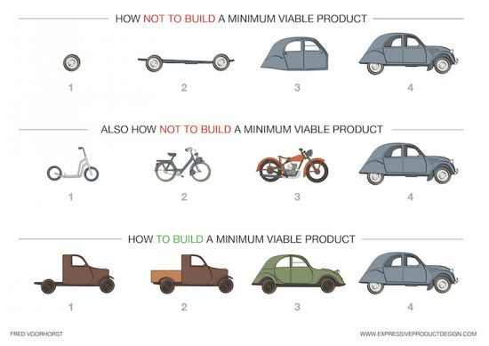
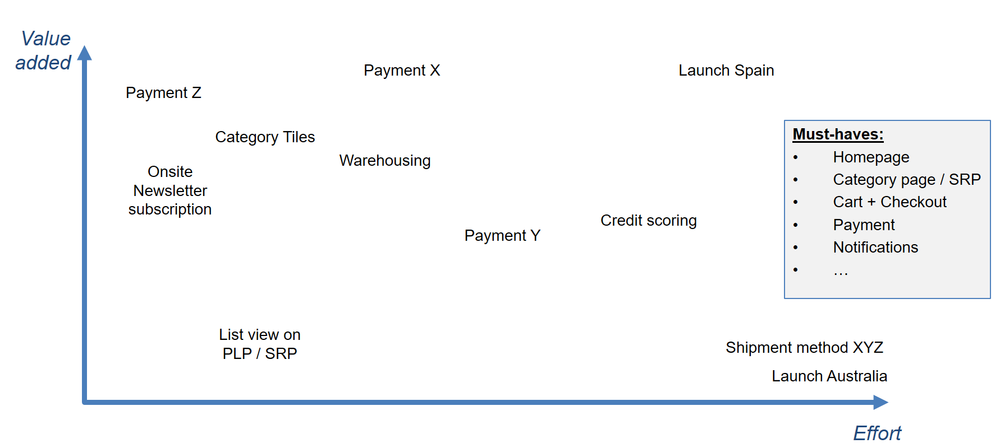
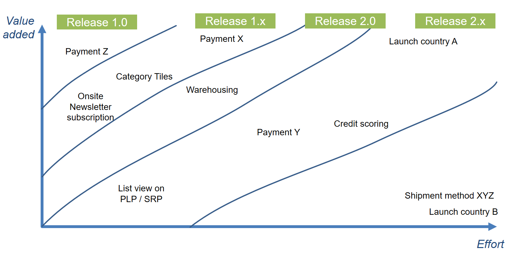

HowTo - MVP Project Structuring
In this HowTo we will provide practical tips and guidelines for structuring MVP Projects.
The purpose of these guidelines is to help with the project planning stage.
In general, good products are built on strong foundations, and a cost-effective projects are managed through clarity, communication and minimal change.
Decoupling IT and Business
Understanding the different stakeholders and creating a clear separation between significantly improves the decision making process and helps assign responsibilities to their correct owners.
IT and Business stakeholders have different agendas, skills and responsibilities.
If not clearly defined, the boundaries between responsibilities will become unclear, leading to misscommunication and prolonged decision making. Moreover, the Business side is in most cases responsible for supporting the IT by providing the necessary approvals and resources. Unclear separation of responsibilities will inevitably lead to the wrong people spending time on the wrong tasks.
The division of responsibilities should be made clear. Business focused responsibilities are reporting, accounting, budgeting, contracts, OKRs and HR. IT focused responsibilities are development, architecture, design and usability.
Clear responsibilities should be used to support cooperation and communication.
Communication and Ceremonies
Tools and meetings are perfect conduits for creating an environment of clarity and communication, just as long as you don't go too far. Too many systems and meetings can create necessary overload and quickly turn into costly time consuming tasks.
As a general rule, create a set communication method and make clear what the endorsed tool of communication is. Discourage the use of multiple tools when possible.
The same goes for meetings, Dallies, Spec Workshops, Sprint Plannings, Retrospectives and etc. are great tools for bringing teams together with a clear purpose. However, to turn meetings into ceremonies make sure they are held on time, have a specific structure, are short and to the point and support decision making and communicating information. Most importantly is that everyone's time is respected.
Specifications
The specification process can be a challenge. There are a few practical suggestions that can make the process more efficient.
- Start early with the designs.
- Start early with the specifications.
- Talk to every single stakeholder from the start, this is the best way to learn about edge cases and be able to do something about them early on.
- Manage your stakeholders and their expectations. Plan specifications to be iterative and clarify the impact development has on the timeline.
- Get the master data early (product data, categories) and also any information you can obtain such as: CMS content, page metadata, attributes, search configurations, images).
- Be flexible with time-lines - early design and specifications always take longer than expected plus there are always hidden/surprise requirements that you find out along the way
- Make the initial specifications a basic subset of the essential parts.
- Build a workable version as soon as possible to validate the design and specifications on a working prototype.
- Be prepared to have several sprints.
- Launch early = learn longer + reduce waste.

- Maximize your time at market.
- Design features with milestones for early testing throughout the development process as opposed to developing a feature and testing it when its complete.
Lean MVP
What is your minimal viable product? What features are essential and what can you live without or are comfortable introducing later when the development matures? These are the questions you should be asking. The decisions you make not only help the development process but also help you as an organization to define and clarify what are the most important features to you.
Initially, to define your MVP try not to match features one by one. Instead, remove features that are rarely used.
Feature-Value Mapping
To create a lean MVP, evaluate the importance of features by the added value they provide. A mapping matrix can help with the evaluation process.
The image below is an example of how to map functionality to asses the value added and Effort.

Once functionality has been mapped, it is easier to asses the scope, importance and cost of each feature.
The next step is to map features to specific releases. With this method, you can formulate a fair assessment of the progression of your release scope and plan your work and resources accordingly.

Controlling Your Backlog
Giving people a voice is positive, controlling the voice is necessary. If everyone gets to have an equal input, things can get out of hand very fast. A high level of involvement in the beginning of a project will lead to an excessive and unmaintainable backlog. Subsequently, the ability to keep accurate estimates will be compromised and the sheer volume will not only be time consuming but lead to shift from planning based on micro factors that are not part of the bigger picture.
To control your backlog you need to put into place a gatekeeper. The gatekeeper can be a BA, PM or PO and their responsibilities should include:
- Enforce a minimal ticket standard (structure and content).
- Identifying and removing duplicates
- Making an initial evaluation of each tickets relevance and timing.
- Assign tickets to a specific release either by routing tickets from main to releases or limiting reporting to a specific release.
Planning for Major Features
The project development life cycle has ups and downs in activity during certain milestones primarily major feature development. There are two main approaches to handling this:
- Spike tickets for larger technical tasks. Where a single developer/expert attacks the feature, dedicating all effort and time to assessing the feature.
- Kickoffs & Plan-of-attacks are usually better for smaller, but complex tickets. Organized by the product owner they will lead the meeting and capture the information.
Both methods will result in a document listing the tasks, resources and timeline needed to realign and fix the functionality. This reduces the risk of doing the wrong thing and improves estimates.
Examples:
Data Export functionality is ideal to be tackled with the spike tickets approach as it is a single functionality with no other external dependencies that needs to be considered. On the other hand something like an ERP Connection that spans many processes and many edge cases, needs in-depth analysis. So you would have plan of attack workshops with the shop and ERP team and also with logistics and payment experts and combine the conclusions into a single plan.
Launch Scenarios
The bottom line is that for each launch you will need to find the scenario that works for you.
There are three main approaches to launching a product:
- Canary - by rolling out features to a small audience you can measure reactions to a feature in a controlled environment.
- Per-(county|brand|…) release a new feature to a controlled subcategory such as a country, group or to a certain brand.
- Big bang - release everything with all the fanfare and issue fixes and changes to the live product.
Choose the launch scenario that best suits the nature of the functionality that you want to release and the level of risk that you can take. For example, if the new feature has to do with financial or highly sensitive information it is better to choose the more conservative Canary appropriate.
Real Life Testing
Nothing compares to testing out an actual working demo or prototype. In the development process changes are inevitable and a product evolves from a specification fast. Having a working prototype allows to test out the initial design and align the development and direction accordingly. Therefore to increases project's productivity, have working system running from day 1.
Make sure that you leverage the working system by using it to receive stakeholder feedback, learn and understand how operations work.
Using focus groups at any stage can help provide not only a user's perspective but also a fresh set of eyes and an outside opinion that is not influenced by, cost, timing and resources.
Time Management
One of the major stress factors in project management is when as soon as the project begins you start focusing on when the project will end. Not only does that introduce stress to the process it also distracts from focusing on managing the project and detracts from our ability to deliver and adhere to plans.
Planning adequate time ensures that additional time-consuming distractions can be avoided.
When working with a very light MVP, usually things go slower than expected and the scope will (at least slightly) increase. Time management also means stakeholder expectation management, defining not only when the project progresses but also what it entails.